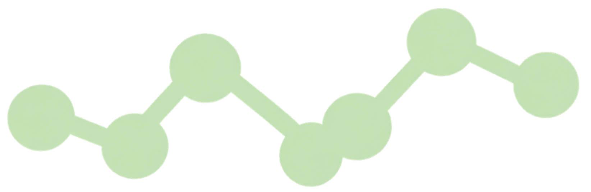
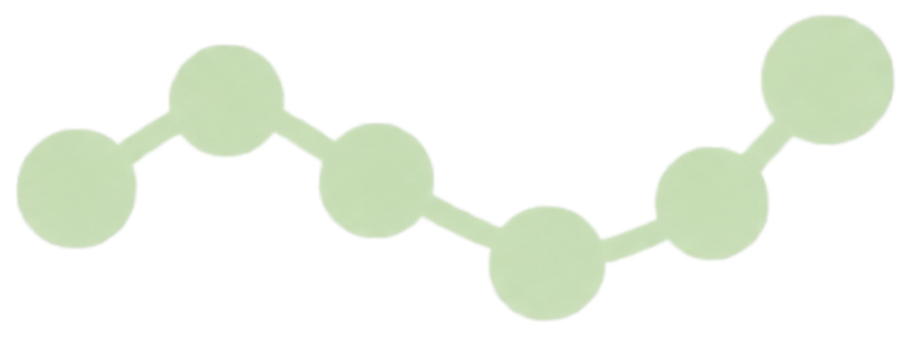

Escolha uma macromolécula

São macromoléculas que são formadas a partir de moléculas menores repetidas, conhecidas como monômeros.
Saiba maisOs lipídios são um grupo de compostos orgânicos essenciais conhecidos pela sua natureza hidrofóbica.
Saiba mais
Aminoácidos são as unidades formadoras das proteínas.
Saiba maisOs ácidos nucleicos são macromoléculas constituídas por nucleotídeos, que formam o DNA e o RNA.
Saiba maisNenhum resultado encontrado.
Explorar o quiz →Polímeros são macromoléculas formadas pela repetição de unidades menores, os monômeros, ligadas por ligações covalentes.
Podem ser naturais, como a celulose, o amido e o DNA, ou sintéticos, como o polietileno, o PVC e o náilon.
Ir para a página →Lipídios são biomoléculas pouco solúveis em água, como gorduras, óleos, ceras, fosfolipídios e esteroides.
Armazenam energia, formam as membranas das células, isolam termicamente o corpo e originam hormônios.
Ir para a página →Carboidratos são açúcares e seus polímeros: monossacarídeos (glicose), dissacarídeos (sacarose) e polissacarídeos (amido, glicogênio, celulose).
São a principal fonte de energia dos seres vivos e dão estrutura às paredes celulares das plantas.
Ir para a página →Proteínas são cadeias de aminoácidos unidos por ligações peptídicas. Os 20 aminoácidos se combinam em sequências diferentes.
A forma tridimensional define a função: enzimas, transporte, defesa, contração muscular e estrutura.
Ir para a página →DNA e RNA são polímeros de nucleotídeos, cada um com um açúcar, um grupo fosfato e uma base nitrogenada.
Guardam e transmitem a informação genética e orientam a produção de proteínas.
Ir para a página →